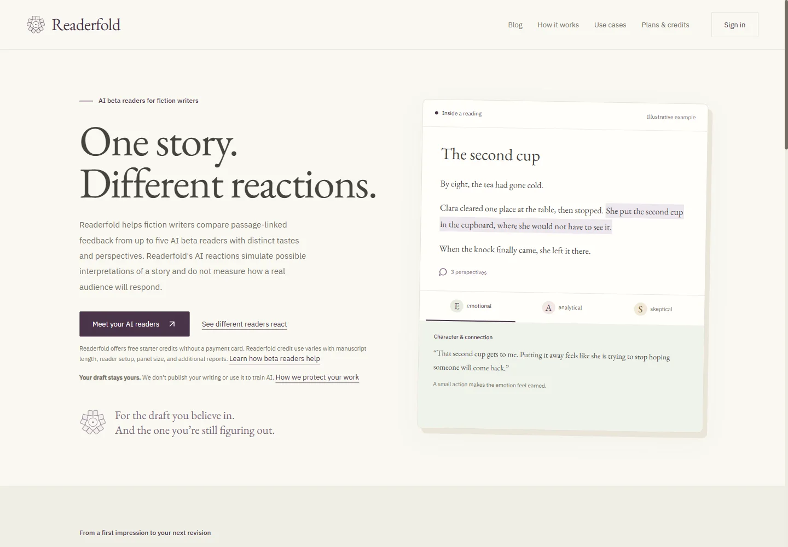

Statistics & Data Science at UCLA
Linda
Meng.
AI research, real-world systems,
and software for people who create.

Readerfold, built & launchedResearch & industry
Ideas, meet
the real world.
Internships and research at the Chinese Academy of Sciences, working where AI meets production, medicine, and robotics.
Full work historyAI in production planning.
Built a RAGFlow-based agent for Liaoning Railway, turning its parts database into manufacturing process sheets.
Shenyang Institute of Computing Technology, CASClinical insight into training data.
Helped build training data for a YOLOv5-based model generating custom removable denture plans from complex dental scans.
Shenyang Institute of Computing Technology, CASLearning to grasp.
Assisted autonomous-grasping research with a 21-DoF Linker Hand L20, collecting teleoperated demonstrations through a data glove.
Chinese Academy of SciencesFeatured work
From a blank page
to a real product.
Readerfold
Founder & solo developer
An AI manuscript-feedback platform that gives fiction writers distinct reader perspectives, carried from passage to passage.
50+ users, grown organically.
Published research
Machine learning.
Human judgment.
I studied suicide-risk classification on Reddit and how network structure shapes harmful-content spread, to help prioritize early human review.
Published in NHSJS & Curieux.
Advised by Dr. Hongliang Wang.
Classification accuracy
Fine-tuned BERT on 16,000 Reddit posts. 0.991 AUC, outperforming decision tree and LSTM-CNN baselines.
Fewer affected users
In a 7,067-user SIR network simulation, targeting highly connected users produced over 3× the reduction of other strategies.
Research dataset and simulation results. Automated screening was framed as support for human review.